bambamR: End-to-End RNA-Seq Processing from FASTQ to Publication-Ready Plots
Raban Heller, Hanno Witte, Konrad Steinestel — BwKrhs Ulm
2026-04-01
Source:vignettes/bambamR-guide.Rmd
bambamR-guide.Rmd
Introduction
bambamR is an R package for end-to-end RNA-seq analysis. It covers the full pipeline from raw FASTQ/BAM files through quality control, alignment, read counting, normalization, differential expression analysis, and publication-ready visualizations including onco plots, volcano plots, heatmaps, PCA, and MA plots.
Key Design Principles
- Graceful degradation: All Bioconductor dependencies are optional. The package operates in minimal mode (CRAN-only) or full mode (with Bioconductor). It never breaks if Bioconductor is missing.
-
Consistent interface: All exported functions use
the
bb_prefix. All plot functions returnggplot2objects for easy customization. - Bundled example data: Every feature can be explored without downloading external files or installing Bioconductor.
Minimal vs. Full Mode
| Feature | Minimal (CRAN) | Full (+ Bioconductor) |
|---|---|---|
| CPM / TPM normalization | Yes | Yes |
| TMM / RLE normalization | – | Yes |
| DESeq2 / edgeR / limma | – | Yes |
| PCA, volcano, heatmap, MA | Yes | Yes |
| Onco plots | Yes | Yes |
| FASTQ / BAM import | Base-R | ShortRead / Rsamtools |
| Alignment wrappers | Yes | Yes |
| Read counting | featureCounts CLI | GenomicAlignments |
| Shiny interactive app | Yes | Yes |
Installation
Install from CRAN (when available):
install.packages("bambamR")Install the development version from GitHub:
pak::pak("rabanheller/bambamR")Optionally install Bioconductor packages for full-mode features:
BiocManager::install(c(
"DESeq2", "edgeR", "limma",
"ShortRead", "Rsamtools",
"GenomicAlignments", "GenomicRanges"
))Bundled Example Data
bambamR ships with ready-to-use datasets accessible via convenience functions:
| Function | Contents |
|---|---|
bb_example_counts() |
200 genes x 10 samples + metadata |
bb_example_mutations() |
300 mutations, 50 samples, 20 genes + clinical data |
bb_example_de() |
500-gene pre-computed DE results |
# RNA-seq count matrix (200 genes x 10 samples)
ex <- bb_example_counts()
counts <- ex$counts
metadata <- ex$metadata
dim(counts)
#> [1] 200 10
counts[1:5, 1:5]
#> Sample_01 Sample_02 Sample_03 Sample_04 Sample_05
#> TP53 525 533 485 515 519
#> KRAS 502 471 498 510 475
#> EGFR 479 504 488 514 473
#> BRAF 454 456 481 453 497
#> PIK3CA 470 469 506 483 532
metadata
#> condition batch sex age
#> Sample_01 control A M 45
#> Sample_02 control B F 52
#> Sample_03 control A M 38
#> Sample_04 control B F 61
#> Sample_05 control A M 55
#> Sample_06 treatment B F 47
#> Sample_07 treatment A M 59
#> Sample_08 treatment B F 42
#> Sample_09 treatment A M 50
#> Sample_10 treatment B F 44Normalization
CPM (Counts Per Million)
CPM normalization works without any optional dependencies:
cpm <- bb_normalize(counts, method = "cpm")TPM (Transcripts Per Million)
TPM requires gene lengths:
gene_lengths <- readRDS(
system.file("extdata", "example_gene_lengths.rds", package = "bambamR")
)
tpm <- bb_normalize(counts, method = "tpm",
gene_lengths = gene_lengths$length)TMM and RLE (Bioconductor)
With Bioconductor installed:
tmm <- bb_normalize(counts, method = "tmm") # requires edgeR
rle <- bb_normalize(counts, method = "rle") # requires DESeq2Visualization
All plot functions return ggplot2 objects that can be
further customized with + theme(), + labs(),
etc.
PCA Plot
bb_pca(cpm, metadata, color_by = "condition")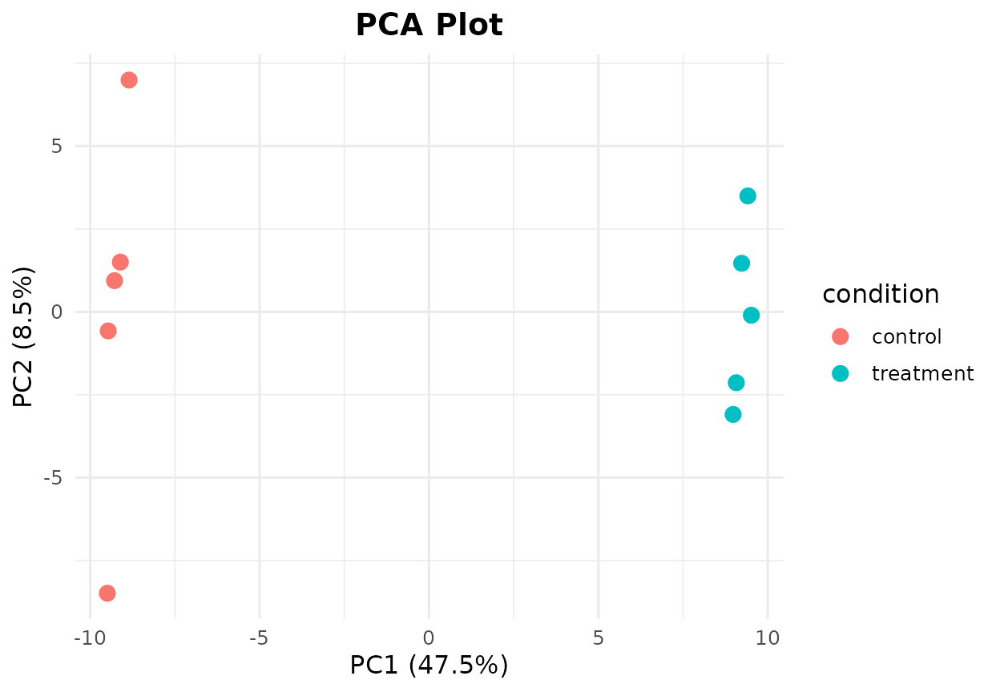
PCA plot colored by experimental condition.
bb_pca(cpm, metadata, color_by = "condition",
shape_by = "batch", label = TRUE, point_size = 4)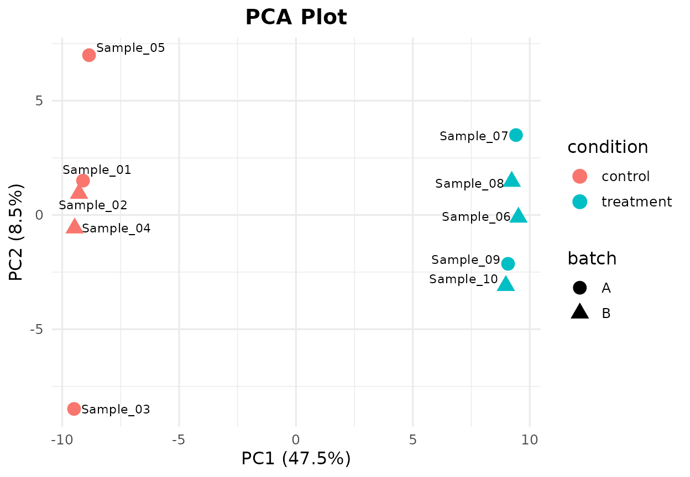
PCA plot with shape mapping for batch effect.
Volcano Plot
Using the pre-computed DE results (no Bioconductor required):
de_results <- bb_example_de()
sig <- sum(de_results$padj < 0.05, na.rm = TRUE)
cat("Significant genes (FDR < 0.05):", sig, "\n")
#> Significant genes (FDR < 0.05): 20
bb_volcano(de_results, fc_cutoff = 1, p_cutoff = 0.05, n_label = 8)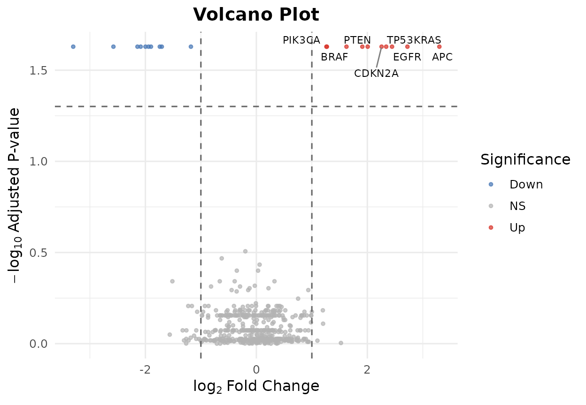
Volcano plot highlighting differentially expressed genes.
bb_volcano(de_results,
fc_cutoff = 0.5,
p_cutoff = 0.01,
label_genes = c("TP53", "KRAS", "EGFR", "PTEN"),
colors = c(up = "#E41A1C", down = "#377EB8", ns = "grey80"))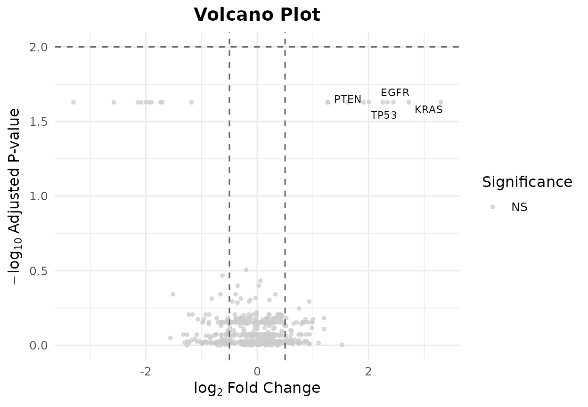
Volcano plot with custom gene labels and colors.
MA Plot
bb_ma_plot(de_results, p_cutoff = 0.05)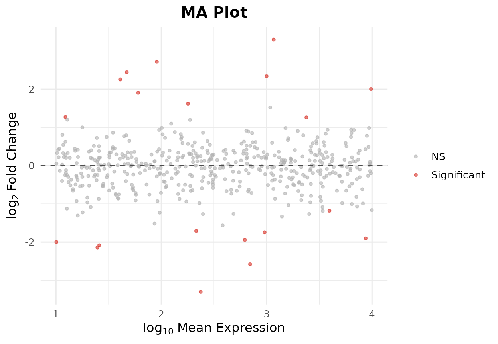
MA plot showing fold-change vs.~mean expression.
Heatmap of Top DE Genes
bb_heatmap(cpm, de_result = de_results, n_genes = 25)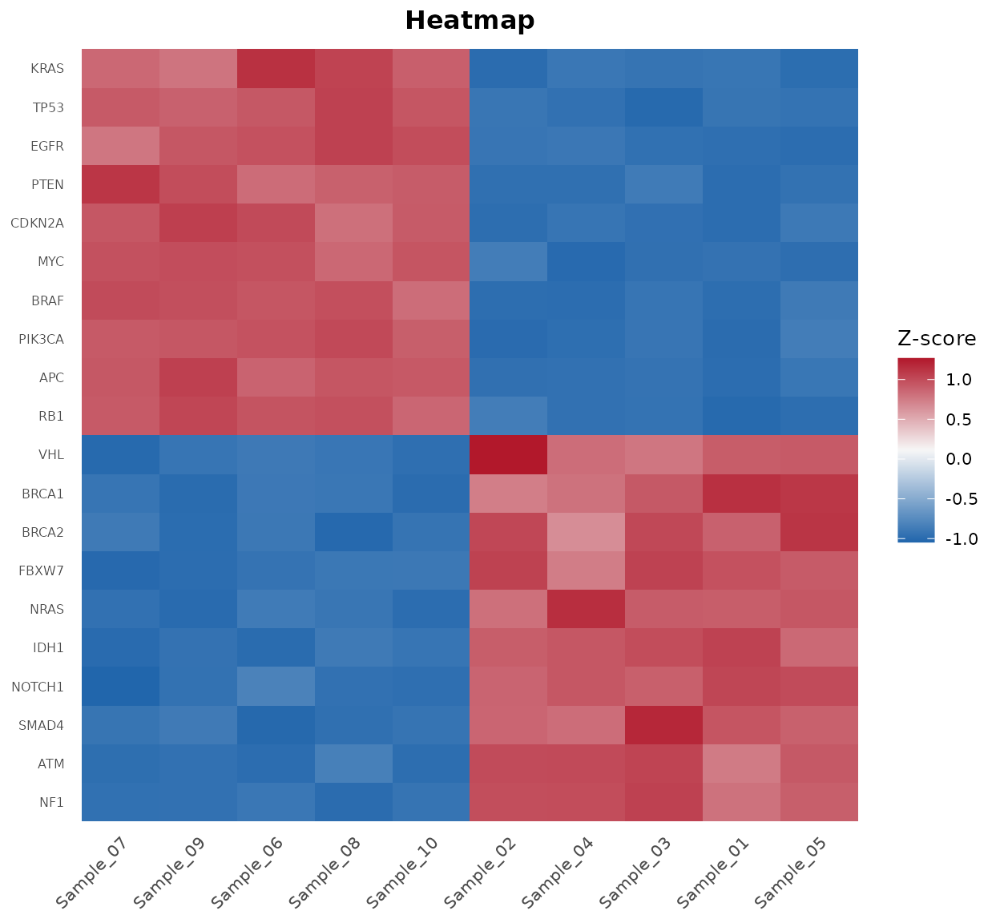
Heatmap of the top 25 differentially expressed genes.
Oncoplot
The bb_oncoplot() function creates publication-ready
waterfall-style mutation landscape plots.
Data Format
bambamR accepts a data.frame with columns
sample, gene, and mutation_type,
or MAF-format data with Hugo_Symbol,
Tumor_Sample_Barcode, and
Variant_Classification.
mut <- bb_example_mutations()
head(mut$mutations)
#> sample gene mutation_type
#> 1 TCGA-021 NRAS In_Frame_Ins
#> 2 TCGA-037 PIK3CA Missense_Mutation
#> 3 TCGA-037 BRAF Splice_Site
#> 4 TCGA-031 PIK3CA Frame_Shift_Ins
#> 5 TCGA-042 RB1 Missense_Mutation
#> 6 TCGA-008 NRAS Missense_MutationBasic Oncoplot
bb_oncoplot(mut$mutations, n_genes = 10, show_barplot = FALSE)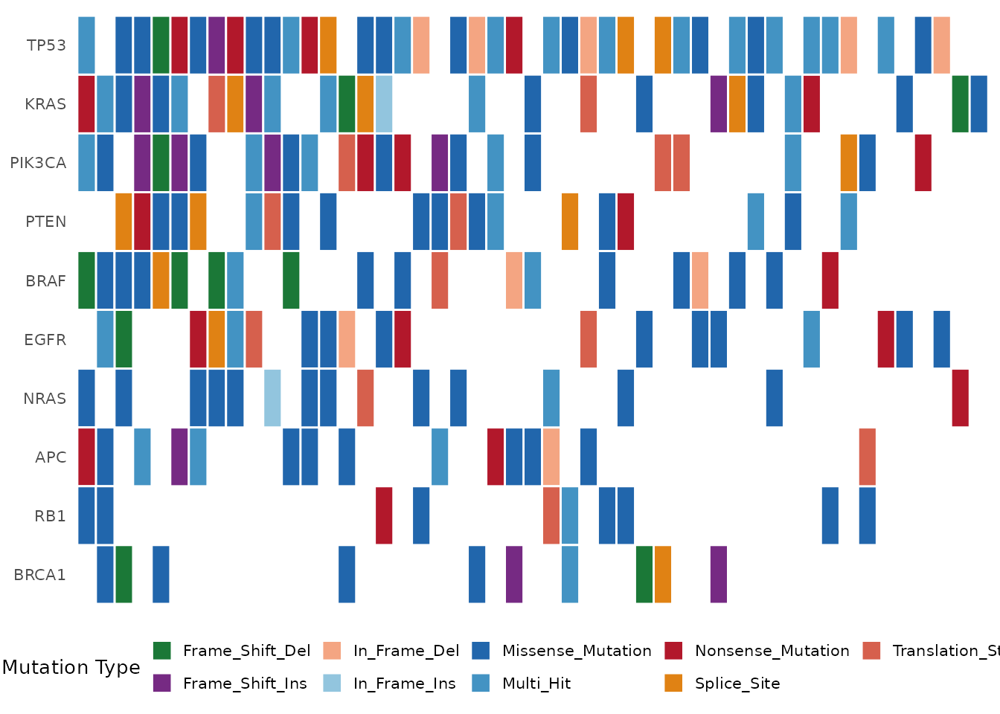
Oncoplot showing the top 10 mutated genes.
Oncoplot with Clinical Annotations
bb_oncoplot(mut$mutations, n_genes = 8,
annotation_df = mut$clinical, show_barplot = FALSE)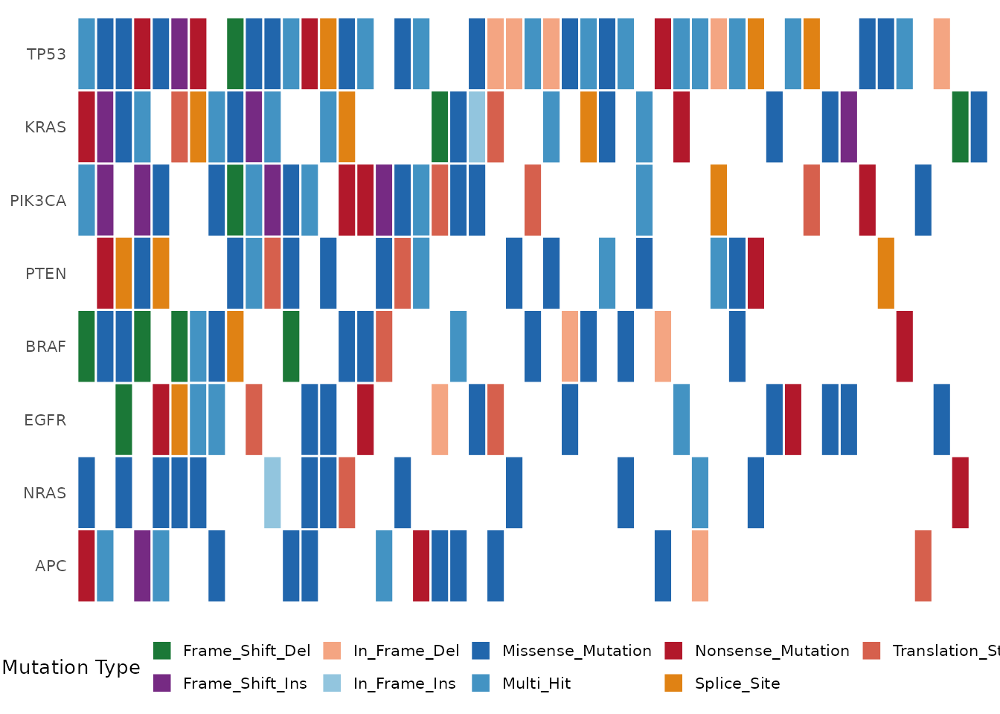
Oncoplot with clinical annotation tracks (Stage, Gender, Smoking).
Selecting Specific Genes
bb_oncoplot(mut$mutations, show_barplot = FALSE,
genes = c("TP53", "KRAS", "PIK3CA", "BRAF", "EGFR"))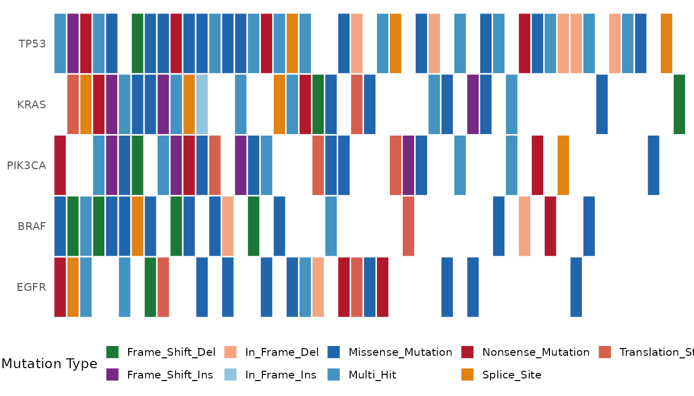
Oncoplot showing five selected genes.
Custom Colors
my_colors <- c(
"Missense_Mutation" = "#3182BD",
"Nonsense_Mutation" = "#E6550D",
"Frame_Shift_Del" = "#31A354",
"Frame_Shift_Ins" = "#756BB1",
"Splice_Site" = "#DE2D26",
"In_Frame_Del" = "#636363",
"In_Frame_Ins" = "#FDAE6B",
"Translation_Start_Site" = "#BCBDDC",
"Multi_Hit" = "#FDD0A2",
"Other" = "#BDBDBD"
)
bb_oncoplot(mut$mutations, n_genes = 8,
mutation_colors = my_colors, show_barplot = FALSE)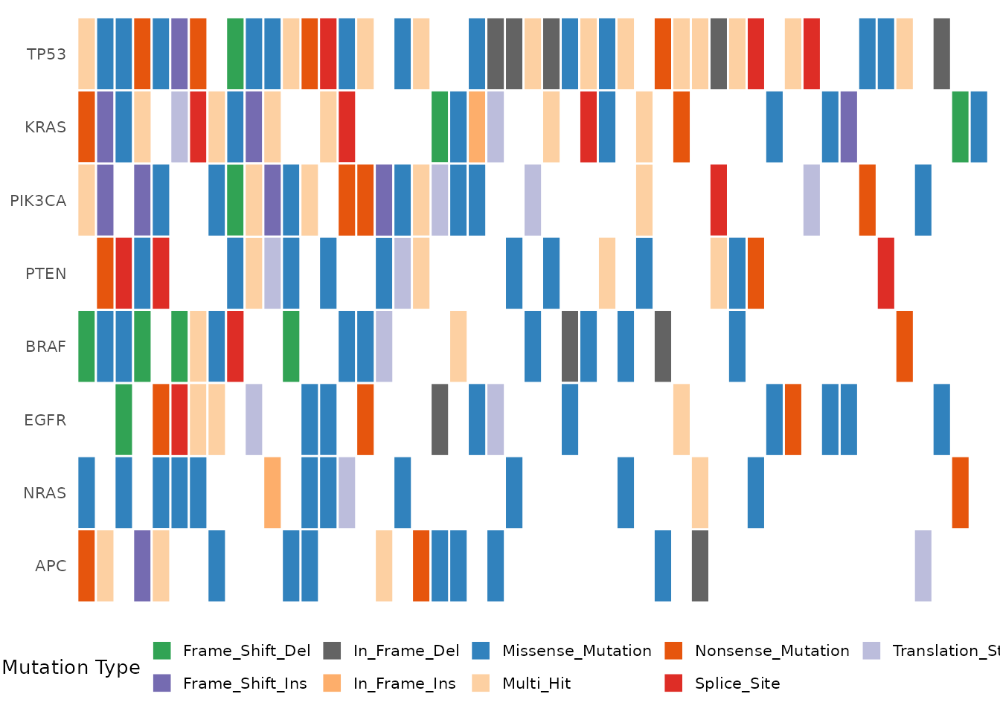
Oncoplot with a custom color palette.
FASTQ Import
bambamR includes a small example FASTQ file (100 reads, 75 bp):
fq_path <- system.file("extdata", "example_reads.fastq",
package = "bambamR")
reads <- bb_read_fastq(fq_path, n = 5)
reads
#> id
#> 1 read_0001 length=75
#> 2 read_0002 length=75
#> 3 read_0003 length=75
#> 4 read_0004 length=75
#> 5 read_0005 length=75
#> sequence
#> 1 CCCTAGATGAGTGGATTCACCTATCGGCGGTATATGTTTCGAAATCTGAGACGCAAAGACCTGTATAAAATTCCC
#> 2 GCGAAGGGATAATAGTCCCTACGAATCTGAAAATGACTAACATGCGTTAGCAACGGTACTGATGGGTATAGGTCA
#> 3 AGGAGTGTTTAACCGGTGACAGCGCCTAATTCTGGAGGGTGGTACCACACACCAACATTACAGATCCGACGACAT
#> 4 ACTAGTCAGGAATCATGTGTGTGATTCCATAGACACATGGCGCGGAAGCCGGCCATATCCCCGTAACGAGCCGCC
#> 5 CGTTCGGCAGATCTACCGGTGTGACTTGACCGGCATTGCTCACCAGAAAGAGTGTAGTTGCCTGAGCCTGTAATG
#> quality
#> 1 >FEGGCIHGFDIEEIHGIIGEFFDCEFGCBEAIIIEGF=IDEEHEFBGAGCIBICIBHCDIHHEGHGA?GEGCCG
#> 2 HGIBCGDHGAIEGADGHFFAIIEFIIHFBIGHBIFFBDGFDFEIHIAFD=HHC=HHIGGFICH=HDIHHHCEIIB
#> 3 GHEEHHBABGDHDIFGFFEEGGHIGFEDHEIEDFFIHDGHE>AICHHE>GBHECFCH?EHEIGDEEICCEGIIHH
#> 4 EE?IGFFIEGFIEIGIHEIIHDHGHEEHFGIHHGFGFCFIHHAIEFHFBHHHAHGHI>EIBFHDIHFFIHHBHFE
#> 5 EIGCIIEGHGIDHEICGEDHCGEGHEEHIHDHGIHAEEFGIEIB=IFDBIBEGFIGIIIHAEG?DIGIBIFHFHGWhen ShortRead is available,
bb_read_fastq() uses it automatically. Otherwise, a base-R
parser handles plain and gzipped FASTQ files.
Quality Control
qc <- bb_qc(fastq_path = fq_path)
qc
#> bambamR QC Summary
#> ==================
#> Files analyzed: 1
#> example_reads.fastq: 100 reads
bb_qc_summary(qc)
#> file total_reads median_gc mapping_rate
#> 1 example_reads.fastq 100 0.4933333 NA
bb_plot_qc(qc)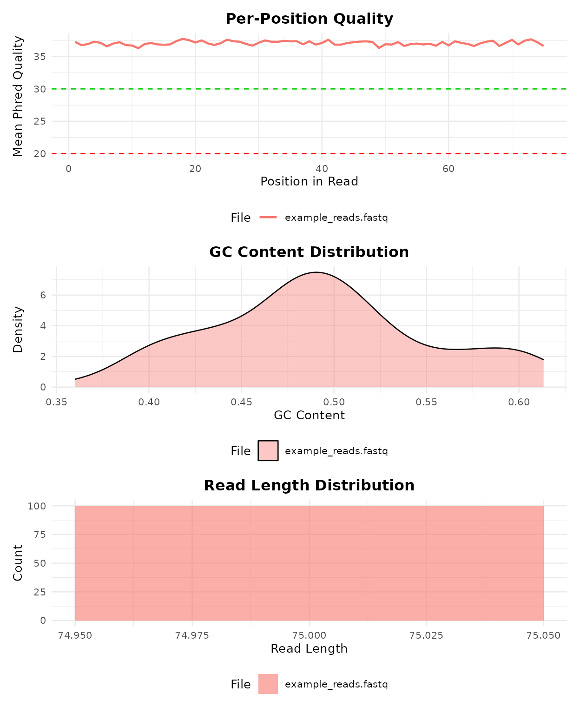
QC visualization panel: per-position quality, GC content, and read length distribution.
Differential Expression
Three DE methods are supported, each requiring an optional
Bioconductor package. All three return a standardized
data.frame with columns gene,
log2fc, pvalue, padj, and
optionally basemean.
# DESeq2 (requires DESeq2)
de <- bb_deseq2(counts, metadata)
# edgeR (requires edgeR)
de <- bb_edger(counts, group = metadata$condition)
# limma-voom (requires limma + edgeR)
design <- model.matrix(~ condition, data = metadata)
de <- bb_limma_voom(counts, design)The standardized output ensures that bb_volcano(),
bb_ma_plot(), bb_heatmap(), and
bb_export_csv() work identically regardless of the DE
method used.
Export
bb_export_csv(de_results, "de_results.csv")
bb_export_tsv(de_results, "de_results.tsv")
bb_export_rds(de_results, "de_results.rds")Full Pipeline
The bb_pipeline() function runs the entire analysis
end-to-end. It accepts entry at three stages:
# From FASTQ files
result <- bb_pipeline(
fastq_dir = "raw_reads/",
genome_index = "STAR_index/",
annotation = "genes.gtf",
sample_info = metadata,
aligner = "STAR",
de_method = "DESeq2",
threads = 8
)
# From BAM files (skip alignment)
result <- bb_pipeline(
bam_dir = "aligned/",
annotation = "genes.gtf",
sample_info = metadata
)
# From a count matrix (skip alignment + counting)
result <- bb_pipeline(
count_matrix = my_counts,
sample_info = metadata,
de_method = "edgeR"
)The returned bb_result object bundles counts, metadata,
DE results, and all generated plots:
result$counts # count matrix
result$de_results # standardized DE data.frame
result$plots$pca # ggplot object
result$plots$volcano # ggplot object
result$plots$heatmap # ggplot objectInteractive Shiny App
Launch a browser-based dashboard for interactive analysis:
The app provides:
- Data upload (CSV, TSV, RDS) with live preview
- Configurable normalization and DE parameters
- Interactive plots (volcano, PCA, heatmap, MA, oncoplot)
- One-click export (CSV, RDS, PDF)
Function Reference
Import
| Function | Description |
|---|---|
bb_read_fastq() |
Read FASTQ files |
bb_read_bam() |
Read BAM files |
bb_count_bam() |
Count reads in BAM |
Quality Control
| Function | Description |
|---|---|
bb_qc() |
Compute QC metrics |
bb_qc_summary() |
Tabular QC summary |
bb_plot_qc() |
QC visualization panel |
Alignment & Counting
| Function | Description |
|---|---|
bb_align() |
Align with STAR / HISAT2 / minimap2 |
bb_count_reads() |
Count reads per gene |
Normalization
| Function | Description |
|---|---|
bb_normalize() |
CPM, TPM, TMM, or RLE |
Differential Expression
| Function | Description |
|---|---|
bb_deseq2() |
DESeq2 wrapper |
bb_edger() |
edgeR quasi-likelihood wrapper |
bb_limma_voom() |
limma-voom wrapper |
Visualization
| Function | Description |
|---|---|
bb_oncoplot() |
Waterfall mutation plot |
bb_volcano() |
Volcano plot |
bb_heatmap() |
Clustered heatmap |
bb_pca() |
PCA plot |
bb_ma_plot() |
MA plot |
Pipeline & Export
| Function | Description |
|---|---|
bb_pipeline() |
Full end-to-end pipeline |
bb_export_csv() |
Export as CSV |
bb_export_tsv() |
Export as TSV |
bb_export_rds() |
Export as RDS |
Example Data & App
| Function | Description |
|---|---|
bb_example_counts() |
Example count matrix |
bb_example_mutations() |
Example mutation data |
bb_example_de() |
Example DE results |
bb_run_app() |
Launch Shiny dashboard |
Citation
If you use bambamR in your research, please cite:
Heller R, Witte H, Steinestel K (2026). bambamR: End-to-End RNA-Seq Processing from FASTQ to Publication-Ready Plots. R package version 0.1.0. https://github.com/rabanheller/bambamR
Session Info
sessionInfo()
#> R version 4.5.3 (2026-03-11)
#> Platform: x86_64-pc-linux-gnu
#> Running under: Ubuntu 24.04.4 LTS
#>
#> Matrix products: default
#> BLAS: /usr/lib/x86_64-linux-gnu/openblas-pthread/libblas.so.3
#> LAPACK: /usr/lib/x86_64-linux-gnu/openblas-pthread/libopenblasp-r0.3.26.so; LAPACK version 3.12.0
#>
#> locale:
#> [1] LC_CTYPE=C.UTF-8 LC_NUMERIC=C LC_TIME=C.UTF-8
#> [4] LC_COLLATE=C.UTF-8 LC_MONETARY=C.UTF-8 LC_MESSAGES=C.UTF-8
#> [7] LC_PAPER=C.UTF-8 LC_NAME=C LC_ADDRESS=C
#> [10] LC_TELEPHONE=C LC_MEASUREMENT=C.UTF-8 LC_IDENTIFICATION=C
#>
#> time zone: UTC
#> tzcode source: system (glibc)
#>
#> attached base packages:
#> [1] stats graphics grDevices utils datasets methods base
#>
#> other attached packages:
#> [1] bambamR_0.1.0
#>
#> loaded via a namespace (and not attached):
#> [1] farver_2.1.2 Biostrings_2.78.0
#> [3] S7_0.2.1 bitops_1.0-9
#> [5] fastmap_1.2.0 GenomicAlignments_1.46.0
#> [7] digest_0.6.39 lifecycle_1.0.5
#> [9] pwalign_1.6.0 cluster_2.1.8.2
#> [11] statmod_1.5.1 compiler_4.5.3
#> [13] rlang_1.1.7 sass_0.4.10
#> [15] tools_4.5.3 yaml_2.3.12
#> [17] knitr_1.51 S4Arrays_1.10.1
#> [19] labeling_0.4.3 htmlwidgets_1.6.4
#> [21] interp_1.1-6 DelayedArray_0.36.0
#> [23] RColorBrewer_1.1-3 ShortRead_1.68.0
#> [25] abind_1.4-8 BiocParallel_1.44.0
#> [27] withr_3.0.2 hwriter_1.3.2.1
#> [29] BiocGenerics_0.56.0 desc_1.4.3
#> [31] grid_4.5.3 stats4_4.5.3
#> [33] latticeExtra_0.6-31 colorspace_2.1-2
#> [35] edgeR_4.8.2 ggplot2_4.0.2
#> [37] scales_1.4.0 iterators_1.0.14
#> [39] SummarizedExperiment_1.40.0 cli_3.6.5
#> [41] rmarkdown_2.31 crayon_1.5.3
#> [43] ragg_1.5.2 generics_0.1.4
#> [45] otel_0.2.0 rjson_0.2.23
#> [47] cachem_1.1.0 parallel_4.5.3
#> [49] XVector_0.50.0 matrixStats_1.5.0
#> [51] vctrs_0.7.2 Matrix_1.7-4
#> [53] jsonlite_2.0.0 IRanges_2.44.0
#> [55] GetoptLong_1.1.0 patchwork_1.3.2
#> [57] S4Vectors_0.48.0 ggrepel_0.9.8
#> [59] clue_0.3-68 systemfonts_1.3.2
#> [61] jpeg_0.1-11 locfit_1.5-9.12
#> [63] foreach_1.5.2 limma_3.66.0
#> [65] jquerylib_0.1.4 glue_1.8.0
#> [67] pkgdown_2.2.0 codetools_0.2-20
#> [69] gtable_0.3.6 shape_1.4.6.1
#> [71] deldir_2.0-4 GenomicRanges_1.62.1
#> [73] ComplexHeatmap_2.26.1 htmltools_0.5.9
#> [75] Seqinfo_1.0.0 circlize_0.4.17
#> [77] R6_2.6.1 textshaping_1.0.5
#> [79] doParallel_1.0.17 evaluate_1.0.5
#> [81] lattice_0.22-9 Biobase_2.70.0
#> [83] png_0.1-9 Rsamtools_2.26.0
#> [85] cigarillo_1.0.0 bslib_0.10.0
#> [87] Rcpp_1.1.1 SparseArray_1.10.10
#> [89] DESeq2_1.50.2 xfun_0.57
#> [91] fs_2.0.1 MatrixGenerics_1.22.0
#> [93] GlobalOptions_0.1.3